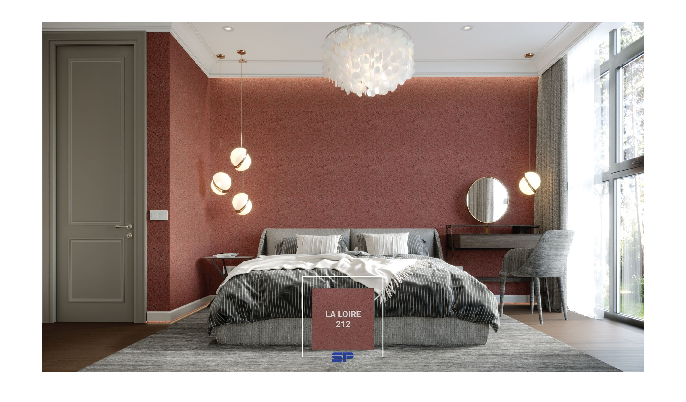

5 เหตุผล ทำไมต้อง Silk Plaster

Silk Plaster เป็นผลิตภัณฑ์ตกแต่งผลิตด้วยเส้นใยธรรมชาติอย่าง ใยไหม ใยฝ้าย และใยไผ่ จึงไม่เป็นอันตราย อีกทั้งยังเป็นนวัตกรรมที่ออกแบบมาเพื่อใช้ทั้งการตกแต่ง ซ่อมแซม และสร้างสรรค์ผนังภายในบ้านให้มีความสวยงาม สำหรับในประเทศไทยยังถือว่าเป็นผลิตภัณฑ์แนวใหม่ที่น่าสนใจ โดยเฉพาะผู้ที่ชื่นชอบความ ECO จะต้องปลื้มปริ่มแน่นอน มาดูกันว่า 5 เหตุผลดีๆ ที่ทำไมต้องเลือกใช้ Silk Plaster
1. ไร้รอยต่อ เข้ากับทุกพื้นที่ภายในบ้าน
Silk Plaster สามารถนำไปตกแต่งพื้นผิวต่างๆ แบบไร้รอยต่อใช้กับทุกพื้นผิวที่มีลักษณะเรียบ ไม่ว่าจะเป็นไม้อัด แผ่นยิปซั่ม ผนังปูนเปลือย กระจก หรือแม้กระทั่งใช้ตกแต่งพื้นผิวเฟอร์นิเจอร์ได้ ด้วยคุณสมบัติที่สามารถปกปิดร่องรอยบนผนังที่ไม่เรียบเนียนได้ทุกซอกมุม อีกทั้งยังไม่ก่อให้เกิดฟองอากาศ ไม่หลุดลอกง่าย สีไม่ซีดจาง แม้จะมีการเปลี่ยนแปลงของอุณหภูมิหรือความชื้นก็ตาม
2. ติดตั้งง่าย สะดวก ประหยัดค่าใช้จ่าย
หากต้องการประหยัดเวลาและค่าใช้จ่ายในการจ้างช่างเทคนิคเพื่อติดตั้ง ซ่อมแซมวอลเปเปอร์เดิม หรือผนังภายในบ้าน การเลือกใช้ Silk Plaster ถือว่าตอบโจทย์ได้เป็นอย่างดี เนื่องจากเป็น Liquid Wall Paper ผลิตจากเส้นใยธรรมชาติมีความยืดหยุ่น สามารถติดตั้งเองได้อย่างง่ายดาย และสะดวก เพียงนำผลิตภัณฑ์มาผสมน้ำเปล่าแล้วฉาบบนผนังหรือพื้นผิวที่ผ่านการเตรียมความพร้อมให้สะอาดไว้เรียบร้อยแล้ว รอให้แห้งและเซตตัวประมาณ 12-24 ชั่วโมง
3. ปลอดภัย ไร้สารพิษ เป็นมิตรกับทุกคน
Silk Plaster ผลิตจากเส้นใยธรรมชาติ ผ่านกระบวนการผลิตที่ปราศจากสารพิษอย่างฟอร์มาลดีไฮด์และสาร Volatile Organic Compounds (VOCs) ที่ส่งผลกระทบต่อภาวะโลกร้อน โดยผ่านการรับรองจากองค์กรระดับสากล จึงมั่นใจได้ว่า Silk Plaster เป็นวัสดุ ECO Wall Covering ที่ทั้งปลอดภัยและสวยงามอย่างแน่นอน
4. ทนไฟได้ ปลอดภัยจากแมลงและเชื้อรา
Silk Plaster มาพร้อมคุณสมบัติในการช่วยป้องกันความร้อนได้ถึง 118 องศาเซลเซียส ช่วยให้ประหยัดค่าไฟฟ้า ลดการทำงานของเครื่องปรับอากาศ อีกทั้งยังผ่านกระบวนการผลิตที่มีมาตรฐานทำให้สามารถดูดซับความชื้นได้ส่งผลให้ปลอดภัยจากแมลงและเชื้อรา ที่สำคัญยังดูดซับเสียงได้เป็นอย่างดีอีกด้วย
5. ซ่อมแซมได้ด้วยตนเอง
การซ่อมแซมรอยถลอก ลอยเปรอะเปื้อนบนผนังที่ตกแต่งด้วย Silk Plaster ไม่ใช่เรื่องยุ่งยาก สามารถทำได้ง่ายและรวดเร็ว เพียงแค่ใช้น้ำเปล่าฉีดพ่นบริเวณที่ต้องการซ่อมแซมแล้วขูด Silk Plaster ออก จากนั้นนำเศษ Silk Plaster ที่เหลือจากการใช้งานนำมาผสมน้ำจนนุ่มแล้วนำไปฉาบที่บริเวณที่ขูดออกมา เกลี่ยให้เรียบเสมอกันเพียงเท่านี้ก็จะได้ผนังที่กลับมาสวยเหมือนใหม่แล้ว